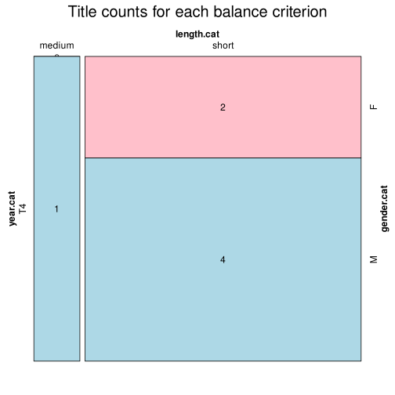

Click on a column heading to sort. Click on a text identifier to read the text (may not work in older browsers).
| Identifier | Encoding | Pages | Words | (Size) | Date (Slot) | Title | Author | Sex | Reprints |
|---|---|---|---|---|---|---|---|---|---|
| gle19011 |
eltec-0 | 90 | 24737 | (short) | 1901 (T4) | Cormac Ua Conaill | Ó Duinnín, Pádraig (1860-1934) | M | low |
| gle19012 |
eltec-0 | 28 | 4775 | (short) | 1901 (T4) | Grádh agus Crádh | Ní Fhaircheallaigh, Úna (1874-1951) | F | low |
| gle19021 |
eltec-0 | 36 | 7859 | (short) | 1902 (T4) | An Cneamhaire | Úna Ní Fhaircheallaigh (1874-1951) | F | low |
| gle19031 |
eltec-0 | 108 | 29488 | (short) | 1903 (T4) | An Gioblachán | Ó hAodha, Tomás (1866-1935) | M | low |
| gle19032 |
eltec-0 | 55 | 15842 | (short) | 1903 (T4) | Mac Fínghin Dubh | Ó Séaghdha, Pádraig (1855–1928) | M | low |
| gle19041 |
eltec-0 | 300 | 83198 | (medium) | 1904 (T4) | Séadna | Ó Laoghaire, Peadar (1839–1920) | M | low |
| gle19042 |
eltec-0 | 58 | 13076 | (short) | 1904 (T4) | Eochaidh Mac Rí 'n-Éirinn | Ó Máille, Micheál (c.1880–1911) | M | low |